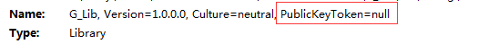
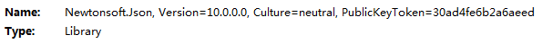
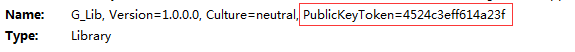

开始看.NET技术的底层原理，不让自己显得那么肤浅，浮于言表，为自己添一砖加一瓦，戳戳这看似高深的段位和晦涩的理论，自我沉淀，心如止水
强命名程序集和弱命名程序集在结构上相同，PE文件头，CLR表头，元数据，以及清单表
弱命名程序集
程序集不具有唯一性，能够被不同厂家的同名dll覆盖，不能够被共享（windows的GAC目录），仅仅能够放到项目基类路径或子目录中，程序集信息中PublicKeyToken = null
使用反编译工具.NET Reflector查看：

强命名程序集
含有一个发布者的公钥/私钥对，能够对称程序集进行唯一标识，实施安全策略和版本策略，从而能够将其部署到用户硬盘的任何地方，甚至是互联网上，PublicKeyToken = 末尾8位散列值，能够防止dll的版本被篡改，但不能够保护源码被反编译

生成强命名程序集
1、打开当前vs的命令行工具
2、输入sn查看该指令是否有效
1 | sn |
3、切换到一个需要生成签名密钥（二进制存储的公钥密钥和私有密钥）的目录，生成密钥文件
1 | cd /d 目标目录 |
4、生成公有密钥
1 | sn -p ggcy.keys ggcy.key.pubkey |
5、查看公有密钥
1 | sn -tp ggcy.key.pubkey |
6、使用密钥ggcy.keys
在项目中单独一个.cs文件，（此处为AssemblyInfo.cs，可定义为其他名称），其中不包含命名空间和类，仅仅添加如下代码：
1 | [assembly:System.Reflection.AssemblyKeyFile("ggcy.keys")] |
然后将之前生成的*.keys文件copy项目根目录下，后重新生成项目，项目生成成功即可
7、查看生成强命名程序集结果

全局程序集缓存
需要共享的强命名程序集可以直接存放到一个特定的文件夹下，作为全局程序集缓存（GAC），能够被系统中的多个程序集共用，类似一个项目中全局变量和缓存的存在，将强命名程序集存储到特殊文件夹的过程称之为全局程序集缓存过程，这个已知的目录叫做全局程序集缓存
通过GAC相关工具（只能够管理员组的用户操作才能成功），将目标强命名程序集添加到对应GAC目录文件夹下，以特定格式路径格式存储，一般在C:\windows\assembly下，GAC工具处理弱命名程序集时，会出现错误提示，并不能进行全局程序集缓存操作，同一个程序集下能够保留多个不同版本的程序集，能够在保留原有程序集的情况下，运行使用新版本的程序集，减少使用的物理内存，实现软件的程序集版本的管理
将强命名程序集部署到GAC中，仍然是注册程序集的一种方式，属于全局部署，不需要改变windows注册表，但是对于简化应用程序的安装，备份，回复，移动和卸载目标带来了额外的成本开销，只有当使用私有部署时，才能够简化目标，共享也造成没有哪个应用程序能够控制共享程序集文件何时该被卸载
引用强命名程序集
引用程序集时，不带程序集路径，仅仅带有程序集的文件名，csc.exe将在按如下顺序的目录中查找程序集：
1、当前工作目录
2、 编译器目前使用的CLR所在目录，MsCorLib.dll总是包含在该目录中
3、任何使用csc.exe的lib命令指定的目录
4、任何LIB环境变量中指定的目录
强命名程序集的防篡改特性
当程序集被安装到GAC目录中时，系统会对包含清单的文件内容进行散列转换，并用得到的散列值来和嵌入到PE文件中的RSA数字签名进行比较，两个值相同时，则证明程序集文件的内容没有被篡改，系统还能够知道对应的公有密钥，此外，系统还会对程序集内的其他文件内容进行散列转换，然后将得到的散列值和清单中FileDef表内存储的散列值进行比较，只要有其中一个存在不匹配情况，表明程序集被篡改，程序集向GAC安装将会失败
同时需要注意的是，强命名程序集在GAC目录，程序集验证只在安装的时候出现一次，强命名程序集不在GAC目录时，每次执行引用程序时都会计算一次程序集文件的散列值，确保程序集的内容不会被篡改，会产生必要的性能损失，CLR运行时不匹配散列值时，将会抛出System.IO.FileLoadException异常
延迟签名
仅仅将公有密钥加载到程序集中，不对程序集中的数据和文件进行散列转换，此时GAC安装程序集将失效，因为程序集内部并未进行散列转换，被视为篡改程序集，可以通过如下操作进行处理，
1、当开发程序集时，在*.cs文件中，此处为AssemblyInfo.cs，引入AssemblyDelaySign特性，如下:
1 | [assembly:System.Reflection.AssemblyKeyFile("ggcy.keys")] |
2、重新生成程序集后，使用sn.exe的指令-Vr设定在CLR运行加载程序集时，跳过对其内部的任何文件的散列值的检查
1 | sn -Vr G_Lib.dll |
3、当准备打包和部署程序集时，使用ggcy.keys（公有/私有密钥对），执行如下命令：
1 | sn -R G_Lib.dll ggcy.keys |
4、恢复验证过程并进行测试
1 | sn -Vu G_Lib.dll |
总结
了解强、弱命名程序集概念，为程序集生成签名，公有部署和私有部署，强命名程序集的特性，对签名的校验，延迟签名的使用技巧